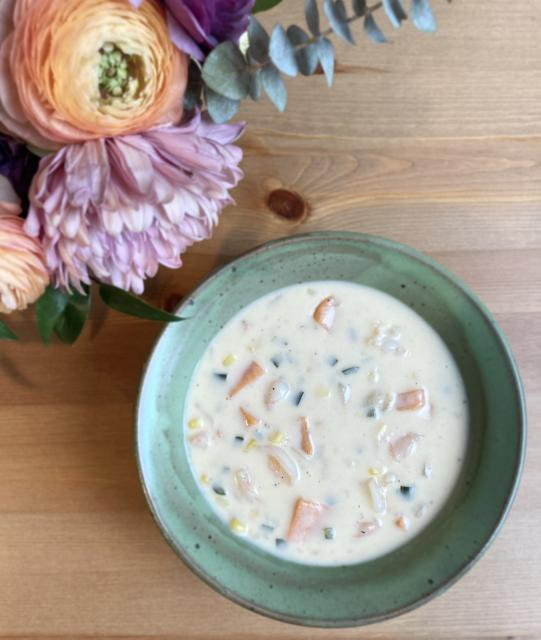

THE Shrimp Chowder
This is a delicious recipe for shrimp chowder. A creamy, hearty soup that
is perfect for a cozy meal.

Serves 6-8.
Ingredients
- 1 tbsp Olive Oil
- 1 Vidalia onion, diced
- 1 pound shrimp, cubed (can be frozen and thawed)
- 1 16 oz pack frozen sweet corn
- 2 cups sweet potatoes, peeled and diced (~2 sweet potatoes)
- 2 poblano peppers, seeded and diced
- 2 cups water
- 2 tbsp fish sauce
- 1 tbsp Tabasco sauce
- 1 tsp salt
- Black pepper to taste
- 2 cups 1 % milk
- 1 quart half & half
- 1 cup flour
Steps
-
Start by creating the cream mixture by combining the water, fish sauce,
Tabasco sauce, salt, a pinch of black pepper, half & half, milk, and
flour in big bowl and whisk until incorporated. Set aside.
-
Heat a heavy pot over medium heat and pour in the olive oil. Once the
oil is hot, add all the vegetables and sweat covered, for approximately
10 minutes. Stir occasionally.
-
Whisk the cream mixture into the vegetables and bring it to a simmer.
Simmer for approximately 15 minutes while stirring frequently until
mixture begins to thicken.
-
Add the shrimp and cook until tender, approx. 5-8 minutes. Stir
frequently. Season with more salt and pepper to your taste.